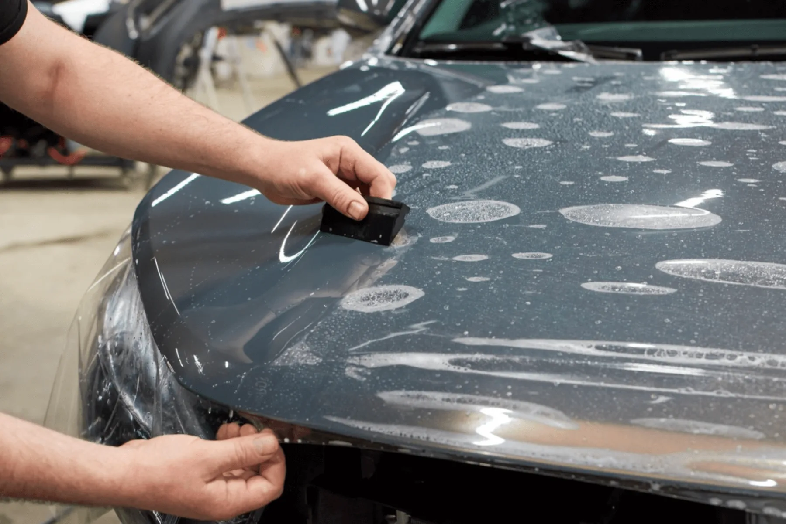

Paint protection film
Clear, virtually invisible film over bumpers, hoods, mirrors and rockers. Takes rock chips, salt and scratches so your paint doesn't. Full front, partial front or full body.

Color, changed.
West Chester's automotive stylists, restyling and protecting cars across the Main Line and Chester County. Free estimates, with pick-up and drop-off available.
A new color without a respray. A wrap changes the whole look of your car, protects the factory paint underneath, and comes off when you're ready for something else.

Real car, rewrapped live
Vehicle
Finish
Wrap color
Gloss red
Plus metallic, color-shift and carbon fiber, in hundreds of colors.

Real car, repainted live
Painted brake calipers are the detail that turns heads at every stoplight. We prep each caliper by hand and finish it in a high-temperature, professional-grade coating that holds its color through brake heat, road salt and brake dust. Pick a color below and see it on a real car.
Vehicle
Caliper color
Red
Once it looks right, keep it that way. Film is physical armor; coating is a chemical shield. Most clients who plan to keep the car get both.

Clear, virtually invisible film over bumpers, hoods, mirrors and rockers. Takes rock chips, salt and scratches so your paint doesn't. Full front, partial front or full body.

A hard, hydrophobic layer bonded to your paint, wrap or film. Deep gloss, UV protection, and washing that takes a fraction of the time.
Tint is measured in VLT: how much visible light the film lets through. Lower number, darker glass. Try a few to see how each one reads.
Want the heat rejection without the darkness? Ceramic tint blocks far more heat than standard film at the same shade. Ask us what's legal for each window in Pennsylvania.
Get a tint estimateKyle was great and did a fantastic job. Very reasonably priced along with great customer service. I was in a bind and needed my car done last minute and he was able to fit me in.Mike
Professional throughout the entire process. I have recommended this service to friends and family alike.William
My car looks phenomenal and the service was amazing. Kyle picked up my car and dropped it off while I was at the office. 10/10.John
It took slightly longer than expected but it was well worth the wait. The tint removal looks terrific, and you should give them a try if you are in the area.Will
Kyle and team did some voodoo magic to transform our cars. They took their time and made sure everything was perfect.Emily
I can't stop raving how much of a difference the cars look and feel after their work! Can't recommend them enough. A+Derek

Wraps, film and coatings happen in the shop. Getting your car here doesn't have to be your problem: we'll pick it up from your home or office and bring it back finished.
Afterward, our mobile van keeps it looking right with maintenance washes and details in your driveway, using its own water and power.
See detailing servicesNo. Quality vinyl on factory paint protects it, and it can be removed when you want to change the color or sell the car. We'll look at the paint first and tell you if anything needs attention before wrapping.
Yes. A lot of clients do both together so the calipers, trim and wrap color work as one look. Bring an idea and we'll help you land on the combination.
If rock chips and scratches are the worry, PPF. If you want gloss and easy washing, ceramic. Most clients who plan to keep the car do film on the front and coating over everything.
It depends on the job: a caliper refinish is much quicker than a full wrap or full-body film. We'll give you a timeline with your estimate, and we can pick up and drop off the car.
Yes. Call, email or stop by with your year, make and model and what you're after.
Minutes from West Chester Borough and right off Route 202. An easy trip from Exton, Malvern, Paoli and Downingtown.
Tell us the car and what you're after. We'll come back with options and a price.